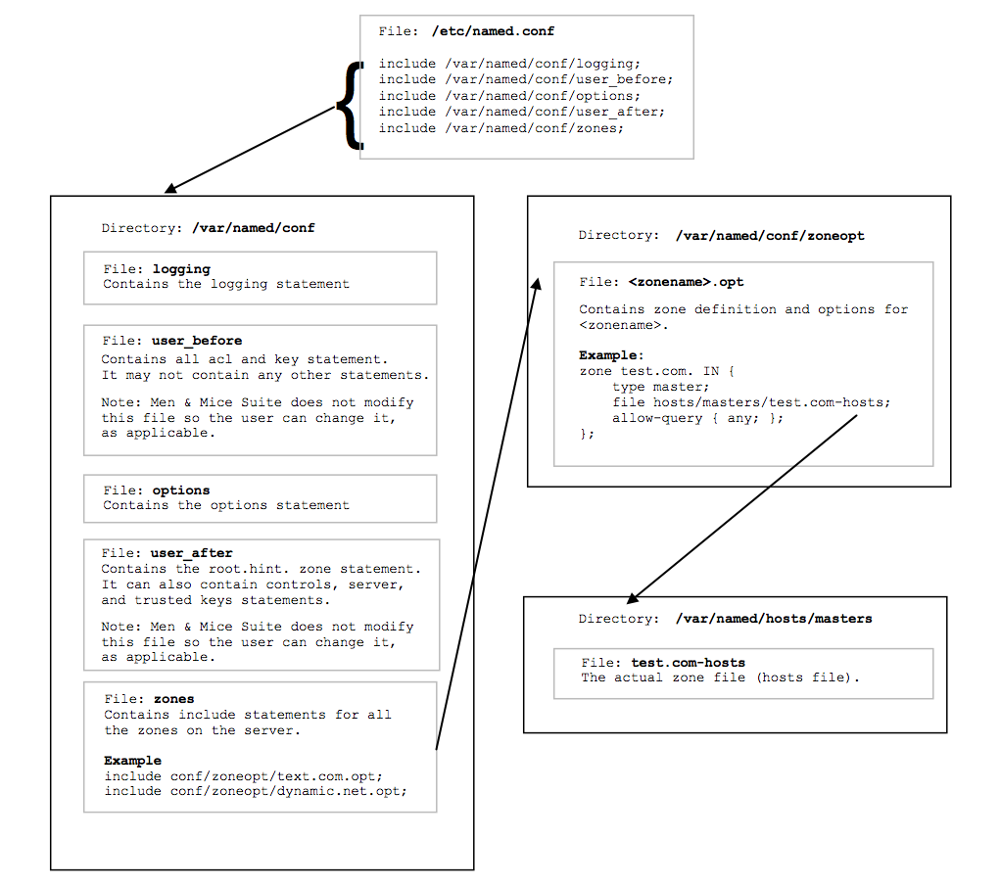

BIND DNS File Structure
Overview
When Micetro is installed on a server running BIND, it needs to perform several changes to the server configuration file structure. This section describes these changes and includes an overview diagram that shows how the server configuration files are processed after Micetro has updated the structure.
named.conf
named.conf is split into several files. A new named.conf file that includes statements for all the new files is created.
When named.conf is split up, a new file is created for each zone statement (see Zone Options Files files, below).
The options statement goes into a separate file. That file is modified when the user makes changes to the server options in the Men&Mice Management Console.
The current version of the Men&Mice Management Console has no interface to change the values of the following statements: key, acl, controls, server, trusted-keys. Therefore, they are kept in separate files, user_before and user_after. Micetro does not modify these files.
The hint zone is copied to /var/named/conf/root.hint. That file is modified when the user makes changes in the Root servers tab in the server options in the Men&Mice Management Console.
Zone Options Files
A new file, /var/named/conf/zones is created. It contains a list of includes for zone option files which are stored in the directory /var/named/conf/zoneopt/, one for each zone. The zone options (or definitions) files are called <zonename>.opt.
Zone Files
No changes are made to the zone files themselves. The installer copies the zone files to different directories, depending on their types:
master and forward zones are copied to
/var/named/hosts/masters/slave and stub zones are copied to
/var/named/hosts/slaves/
The new zone file is named <zonename>-hosts.
Configuration Files Diagram
The following diagram provides an overview on how the configuration files are processed after the file structure has been updated by Micetro.
{kind=link}